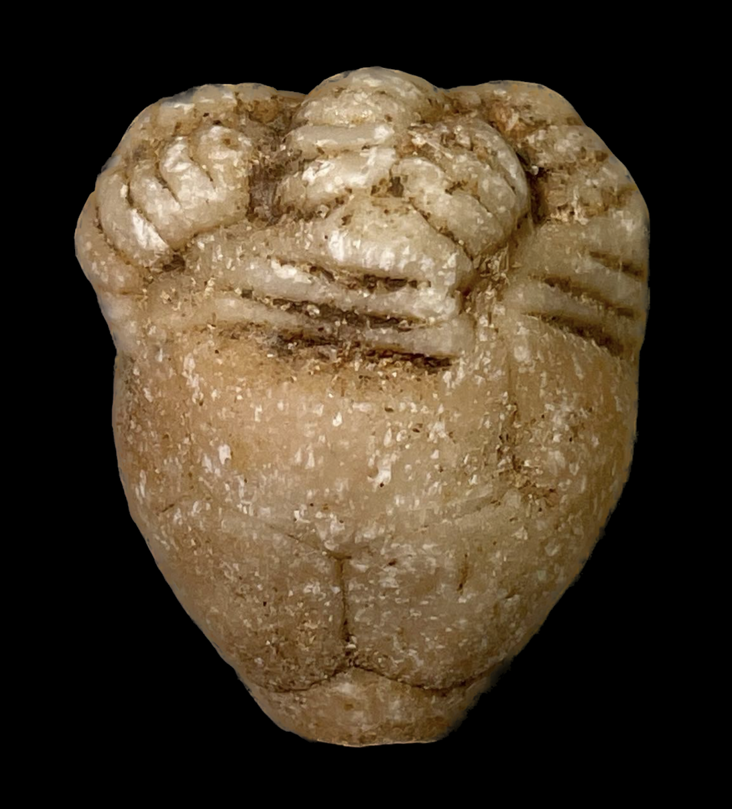
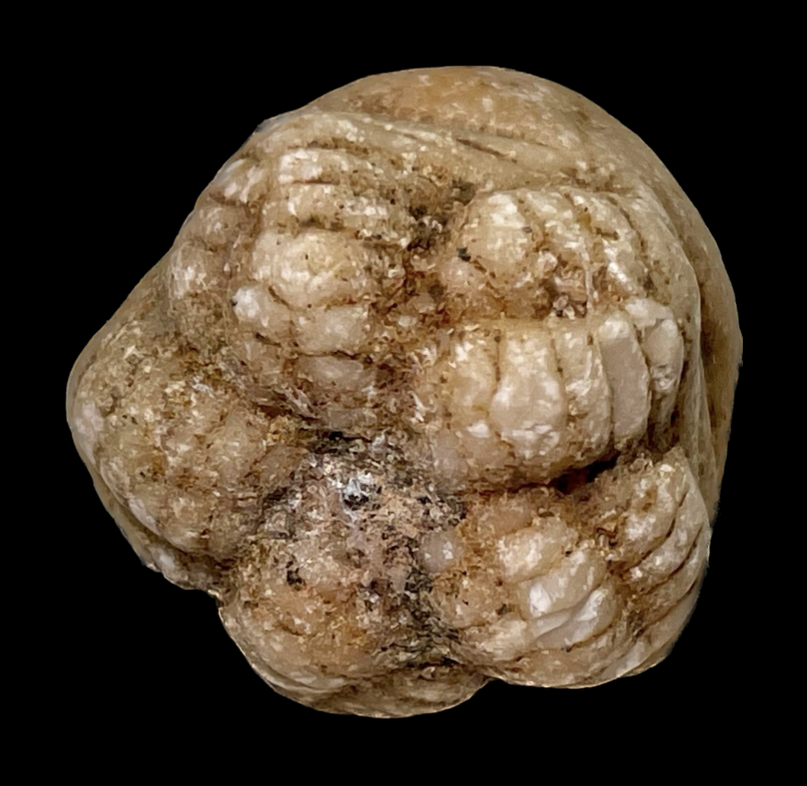
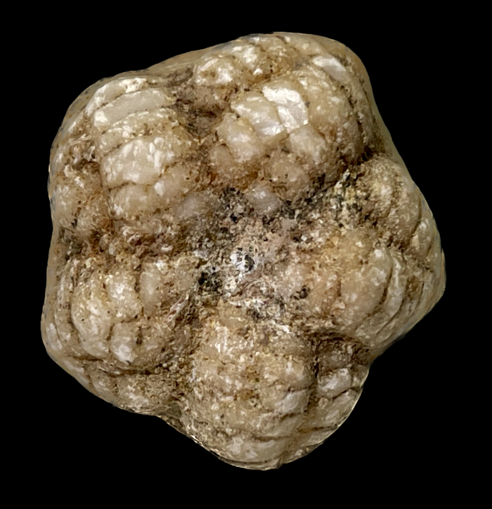

Calycocrinus sp.
Size: 2.5 cm crownThe Permian-aged crinoid fauna of Timor, Indonesia shows some of the most striking and unique late paleozoic adaptations. Case in point is this fascinating specimen, identified generously by Georgy Mirantsev as "Calycocrinus sp.", a member of an unusual Flexible crinoid genus. It has a round, compact crown with thick calyx plates and completely lacks an anal plate in the cup. Most remarkable are the arms: the primibrachials are highly asymmetrical being wide and elongated on their left, and they attach to the calyx at a slanted angle. This pattern causes the crinoid's arms to lean to the right, and in this case snugly fold into and interlock with each other counterclockwise when viewed from above. In a 1926 paper on the most unusual forms of fossil crinoids, Frank Springer observed that compact crowns and simple, infolding arms often slotting into furrows seem to be common features among the Timor crinoids. He supposed that these adaptations were presumably means of protection from currents in response to life in strongly moving water, namely a reef life. |
 |
|---|
Copyright © 2024 by Samuel Kim, all rights reserved